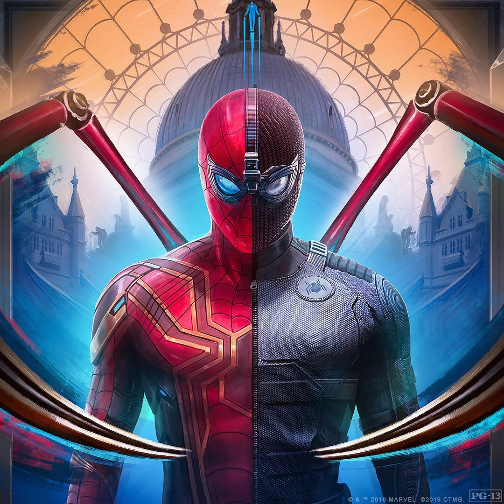
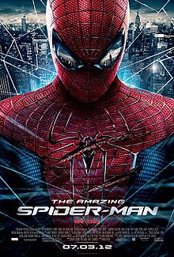

Томас Стенлі «Том» Голланд (англ. Thomas Stanley «Tom» Holland; 1 червня 1996) — британський актор і танцюрист. Найбільш відомий за роллю Людини-павука в Кіновсесвіті Marvel, головною роллю у мюзиклі «Біллі Елліот», а також роллю у фільмі «Неможливе».
Голланд народився у Кінгстоні-на-Темзі, Лондон, у сім'ї фотографа Ніколи Елізабет і комедіанта та письменника Домініка Голланда. Має трьох братів, молодших на три роки близнюків Сема і Гаррі, останній з яких з'явився в ролі Генрі, принца Уельського у фільмі «Діана», і молодшого на вісім років Патріка. Його дідусь і бабуся по батьківській лінії родом з Острову Мен та Ірландії.
Голланд навчався в Донхеді, римо-католицькій підготовчій школі Вімблдоні на південному заході Лондона, а згодом перейшов до Вімблдонського коледжу, де навчався до грудня 2012. У той же час, він відвідував Лондонську школу виконавського мистецтва і технологій.
Люди́на-паву́к або Спайдермен (англ. Spider-Man, 27 серпня 2001, справжнє ім'я — Peter Benjamin Parker) — супергерой коміксів компанії Marvel, вигаданий Стеном Лі та Стівом Дітко. Вперше Людина-павук з'явився у серії коміксів Amazing Fantasy #15 у серпні 1962 року. Відтоді він є одним з найпопулярніших і комерційно найуспішніших супергероїв. Зараз він з'являється не лише у коміксах, а й у фільмах, на телебаченні, на одязі, у відеоіграх та у вигляді іграшок.
Це перший персонаж супергерой-підліток, який діє самостійно, а не допомагає дорослому супергероєві. Хоча за час випуску історій про нього він встиг закінчити школу, коледж та навіть стати одруженим учителем.
Marvel Comics випустила безліч серій коміксів про Людину-павука, першою з яких була The Amazing Spider-Man (укр. Неймовірна Людина-павук); її останній випуск вийшов в грудні 2012 року.
На зміну цій серії прийшла нова серія коміксів The Superior Spider-Man (укр. Чудова Людина-павук). Серія закінчилась на 31 номері, а на її місце прийшов третій том The Amazing Spider-Man. Комікс знову був перезапущений після подій Secret Wars (укр. Секретні війни). За роки свого існування Пітер Паркер (Людина-павук) встиг побути членом деяких суперкоманд, таких як Месники, Нові Месники, Фантастична четвірка. Найбільш характерним образом Пітера Паркера поза життям Людини-павука був образ незалежного фотографа, який використовувався в коміксах протягом багатьох років.